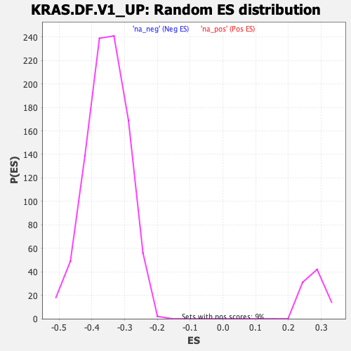

| | | Dataset | DE_genes2 |
| Phenotype | NoPhenotypeAvailable |
| Upregulated in class | na_neg |
| GeneSet | KRAS.DF.V1_UP |
| Enrichment Score (ES) | -0.5743403 |
| Normalized Enrichment Score (NES) | -1.6206541 |
| Nominal p-value | 0.0 |
| FDR q-value | 0.0077414475 |
| FWER p-Value | 0.1 |
Table: GSEA Results Summary
 Fig 1: Enrichment plot: KRAS.DF.V1_UP
Fig 1: Enrichment plot: KRAS.DF.V1_UP
Profile of the Running ES Score & Positions of GeneSet Members on the Rank Ordered List
| SYMBOL | RANK IN GENE LIST | RANK METRIC SCORE | RUNNING ES | CORE ENRICHMENT | | 1 | CDA | 739 | 2.693 | -0.0317 | No |
| 2 | ALDOC | 810 | 2.503 | -0.0266 | No |
| 3 | HSPA2 | 998 | 2.147 | -0.0293 | No |
| 4 | FAR2 | 1320 | 1.636 | -0.0414 | No |
| 5 | SLC26A2 | 1327 | 1.628 | -0.0358 | No |
| 6 | BCL2L1 | 1330 | 1.625 | -0.0300 | No |
| 7 | GLRX | 1344 | 1.599 | -0.0250 | No |
| 8 | DDB2 | 1369 | 1.562 | -0.0207 | No |
| 9 | SERPINB1 | 1501 | 1.427 | -0.0229 | No |
| 10 | SERPINE1 | 1644 | 1.317 | -0.0261 | No |
| 11 | FADS2 | 1712 | 1.272 | -0.0252 | No |
| 12 | DKK1 | 1825 | 1.188 | -0.0272 | No |
| 13 | NAT1 | 1886 | 1.146 | -0.0264 | No |
| 14 | QPRT | 1903 | 1.132 | -0.0232 | No |
| 15 | TM4SF1 | 2043 | 1.059 | -0.0272 | No |
| 16 | ADGRE5 | 2108 | 1.022 | -0.0271 | No |
| 17 | TMEM160 | 2195 | 0.979 | -0.0283 | No |
| 18 | REXO5 | 2369 | 0.896 | -0.0348 | No |
| 19 | PLAT | 2441 | 0.870 | -0.0356 | No |
| 20 | LRP8 | 2449 | 0.868 | -0.0329 | No |
| 21 | DLGAP4 | 2465 | 0.864 | -0.0306 | No |
| 22 | HERC5 | 2469 | 0.862 | -0.0277 | No |
| 23 | RPS6KA5 | 2535 | 0.843 | -0.0282 | No |
| 24 | PROCR | 2542 | 0.840 | -0.0255 | No |
| 25 | SLC22A4 | 2585 | 0.825 | -0.0249 | No |
| 26 | KIF3A | 2615 | 0.814 | -0.0236 | No |
| 27 | DLGAP5 | 2674 | 0.791 | -0.0240 | No |
| 28 | PLCH2 | 2718 | 0.779 | -0.0236 | No |
| 29 | OPLAH | 2890 | 0.729 | -0.0305 | No |
| 30 | INPP4B | 3074 | 0.682 | -0.0383 | No |
| 31 | DNASE1L1 | 3188 | 0.653 | -0.0423 | No |
| 32 | RASIP1 | 3343 | 0.618 | -0.0487 | No |
| 33 | ABHD10 | 3624 | 0.564 | -0.0624 | No |
| 34 | GLMN | 3632 | 0.563 | -0.0607 | No |
| 35 | TMEM135 | 3864 | 0.519 | -0.0718 | No |
| 36 | CCDC85B | 4050 | 0.489 | -0.0804 | No |
| 37 | CRYZ | 4059 | 0.488 | -0.0791 | No |
| 38 | BORA | 4106 | 0.480 | -0.0799 | No |
| 39 | RRAD | 4132 | 0.478 | -0.0796 | No |
| 40 | ANKRD46 | 4216 | 0.464 | -0.0826 | No |
| 41 | GNE | 4218 | 0.463 | -0.0809 | No |
| 42 | G6PD | 4382 | 0.438 | -0.0885 | No |
| 43 | EMP3 | 4385 | 0.437 | -0.0870 | No |
| 44 | HS3ST3A1 | 4729 | 0.388 | -0.1049 | No |
| 45 | PPM1D | 4868 | 0.372 | -0.1112 | No |
| 46 | TUBG2 | 4951 | 0.362 | -0.1145 | No |
| 47 | SCAND1 | 5044 | 0.352 | -0.1184 | No |
| 48 | ETNK1 | 5210 | 0.333 | -0.1265 | No |
| 49 | AURKB | 5424 | 0.309 | -0.1373 | No |
| 50 | IFI35 | 5607 | 0.289 | -0.1464 | No |
| 51 | MPI | 5663 | 0.282 | -0.1485 | No |
| 52 | TLR2 | 5802 | 0.268 | -0.1553 | No |
| 53 | ATP9A | 5992 | 0.250 | -0.1650 | No |
| 54 | ALDH7A1 | 6066 | 0.244 | -0.1682 | No |
| 55 | ETFB | 6528 | 0.200 | -0.1933 | No |
| 56 | MAP3K6 | 6570 | 0.195 | -0.1949 | No |
| 57 | SRGN | 6845 | 0.172 | -0.2096 | No |
| 58 | MED24 | 7699 | 0.090 | -0.2571 | No |
| 59 | ANTKMT | 7810 | 0.078 | -0.2630 | No |
| 60 | INPP5F | 7950 | 0.065 | -0.2706 | No |
| 61 | STK4 | 8081 | 0.053 | -0.2777 | No |
| 62 | TRPC1 | 8238 | 0.037 | -0.2863 | No |
| 63 | KIN | 8253 | 0.036 | -0.2869 | No |
| 64 | SLC2A10 | 8358 | 0.025 | -0.2927 | No |
| 65 | TP53I3 | 8520 | 0.013 | -0.3017 | No |
| 66 | RETSAT | 8939 | -0.029 | -0.3250 | No |
| 67 | CTNNBL1 | 9397 | -0.069 | -0.3504 | No |
| 68 | IFIT1 | 9416 | -0.071 | -0.3511 | No |
| 69 | PLIN3 | 9486 | -0.078 | -0.3547 | No |
| 70 | ASPH | 9666 | -0.096 | -0.3644 | No |
| 71 | RIDA | 9668 | -0.096 | -0.3641 | No |
| 72 | SAP30 | 9724 | -0.102 | -0.3668 | No |
| 73 | CBR4 | 9785 | -0.107 | -0.3698 | No |
| 74 | CCNT2 | 9843 | -0.112 | -0.3726 | No |
| 75 | PTPRG | 10095 | -0.139 | -0.3862 | No |
| 76 | CORO1A | 10177 | -0.147 | -0.3902 | No |
| 77 | UBE2W | 10218 | -0.151 | -0.3919 | No |
| 78 | CLPB | 10344 | -0.165 | -0.3983 | No |
| 79 | AKT3 | 10531 | -0.184 | -0.4080 | No |
| 80 | SMYD3 | 10674 | -0.198 | -0.4153 | No |
| 81 | GLS2 | 10994 | -0.234 | -0.4323 | No |
| 82 | FKBP1B | 11084 | -0.245 | -0.4364 | No |
| 83 | SMARCD3 | 11134 | -0.251 | -0.4383 | No |
| 84 | STX4 | 11167 | -0.255 | -0.4391 | No |
| 85 | TBC1D8 | 11323 | -0.278 | -0.4468 | No |
| 86 | SMARCA1 | 11381 | -0.286 | -0.4490 | No |
| 87 | DSN1 | 11550 | -0.304 | -0.4573 | No |
| 88 | LGALS3BP | 11811 | -0.336 | -0.4707 | No |
| 89 | PDLIM2 | 11852 | -0.340 | -0.4717 | No |
| 90 | MVP | 11907 | -0.347 | -0.4734 | No |
| 91 | ZNF654 | 12008 | -0.362 | -0.4777 | No |
| 92 | ING2 | 12142 | -0.379 | -0.4838 | No |
| 93 | PPP2R3B | 12144 | -0.379 | -0.4825 | No |
| 94 | DPYSL2 | 12149 | -0.380 | -0.4814 | No |
| 95 | CUTC | 12249 | -0.395 | -0.4855 | No |
| 96 | SMTN | 12296 | -0.403 | -0.4866 | No |
| 97 | ZMYND8 | 12309 | -0.405 | -0.4858 | No |
| 98 | IL13RA2 | 12492 | -0.432 | -0.4944 | No |
| 99 | PELI1 | 12540 | -0.439 | -0.4955 | No |
| 100 | CAT | 12654 | -0.456 | -0.5002 | No |
| 101 | VEGFC | 12661 | -0.457 | -0.4989 | No |
| 102 | KHDRBS3 | 12767 | -0.474 | -0.5030 | No |
| 103 | SUGCT | 12777 | -0.475 | -0.5018 | No |
| 104 | RAC2 | 12979 | -0.511 | -0.5112 | No |
| 105 | LOXL2 | 13010 | -0.516 | -0.5111 | No |
| 106 | E2F8 | 13102 | -0.533 | -0.5142 | No |
| 107 | CCNG2 | 13113 | -0.536 | -0.5129 | No |
| 108 | JAK2 | 13144 | -0.541 | -0.5126 | No |
| 109 | CALHM2 | 13430 | -0.597 | -0.5264 | No |
| 110 | EHBP1L1 | 13619 | -0.632 | -0.5347 | No |
| 111 | SCG5 | 13669 | -0.641 | -0.5351 | No |
| 112 | DPYD | 13713 | -0.650 | -0.5351 | No |
| 113 | STN1 | 13868 | -0.686 | -0.5413 | No |
| 114 | FLRT3 | 13880 | -0.688 | -0.5394 | No |
| 115 | ANKRD36B | 13934 | -0.700 | -0.5399 | No |
| 116 | SEC24D | 14003 | -0.716 | -0.5411 | No |
| 117 | ACADVL | 14037 | -0.724 | -0.5403 | No |
| 118 | BMPR2 | 14207 | -0.768 | -0.5470 | No |
| 119 | IFI27 | 14273 | -0.787 | -0.5478 | No |
| 120 | GREM1 | 14324 | -0.803 | -0.5477 | No |
| 121 | FAM168A | 14410 | -0.834 | -0.5495 | No |
| 122 | BBS9 | 14429 | -0.840 | -0.5474 | No |
| 123 | GCH1 | 14526 | -0.875 | -0.5496 | No |
| 124 | ELK3 | 14586 | -0.898 | -0.5497 | No |
| 125 | AKAP12 | 14633 | -0.913 | -0.5490 | No |
| 126 | ASMTL | 14791 | -0.963 | -0.5543 | No |
| 127 | LTBP3 | 14814 | -0.970 | -0.5520 | No |
| 128 | CAPRIN2 | 14828 | -0.977 | -0.5492 | No |
| 129 | CHRNA5 | 14971 | -1.038 | -0.5534 | No |
| 130 | IRF9 | 15164 | -1.131 | -0.5601 | No |
| 131 | GATA6 | 15208 | -1.156 | -0.5583 | No |
| 132 | SPAG4 | 15214 | -1.157 | -0.5544 | No |
| 133 | MMP1 | 15303 | -1.209 | -0.5550 | No |
| 134 | PLPP2 | 15641 | -1.404 | -0.5688 | No |
| 135 | PLAU | 15741 | -1.493 | -0.5689 | Yes |
| 136 | FUT8 | 15749 | -1.498 | -0.5639 | Yes |
| 137 | BEX4 | 15812 | -1.554 | -0.5618 | Yes |
| 138 | BCL6 | 15813 | -1.555 | -0.5561 | Yes |
| 139 | TSPAN5 | 15893 | -1.642 | -0.5546 | Yes |
| 140 | ADAM8 | 15914 | -1.659 | -0.5497 | Yes |
| 141 | ISG20 | 15918 | -1.663 | -0.5439 | Yes |
| 142 | HSD17B2 | 15997 | -1.739 | -0.5420 | Yes |
| 143 | IFI44 | 16022 | -1.772 | -0.5369 | Yes |
| 144 | SLC4A7 | 16057 | -1.792 | -0.5323 | Yes |
| 145 | GNG11 | 16074 | -1.806 | -0.5267 | Yes |
| 146 | BCL3 | 16387 | -2.280 | -0.5360 | Yes |
| 147 | ANPEP | 16497 | -2.460 | -0.5332 | Yes |
| 148 | INHBA | 16551 | -2.543 | -0.5269 | Yes |
| 149 | SPRY2 | 16612 | -2.655 | -0.5207 | Yes |
| 150 | IFITM1 | 16642 | -2.717 | -0.5125 | Yes |
| 151 | GSTT2 | 16682 | -2.792 | -0.5046 | Yes |
| 152 | NRP1 | 16726 | -2.903 | -0.4965 | Yes |
| 153 | PITPNC1 | 16735 | -2.921 | -0.4864 | Yes |
| 154 | RGS17 | 16774 | -2.994 | -0.4777 | Yes |
| 155 | ARHGEF3 | 16779 | -3.013 | -0.4670 | Yes |
| 156 | PXDN | 16782 | -3.018 | -0.4562 | Yes |
| 157 | CXCL8 | 16870 | -3.235 | -0.4494 | Yes |
| 158 | TFPI2 | 16889 | -3.325 | -0.4383 | Yes |
| 159 | HCLS1 | 16930 | -3.449 | -0.4281 | Yes |
| 160 | PID1 | 17140 | -4.284 | -0.4243 | Yes |
| 161 | SRPX | 17160 | -4.376 | -0.4096 | Yes |
| 162 | RGS2 | 17282 | -4.991 | -0.3983 | Yes |
| 163 | STEAP1 | 17322 | -5.247 | -0.3815 | Yes |
| 164 | TMEM158 | 17328 | -5.285 | -0.3627 | Yes |
| 165 | CXCL3 | 17339 | -5.337 | -0.3439 | Yes |
| 166 | TIMP4 | 17452 | -5.835 | -0.3291 | Yes |
| 167 | BMP6 | 17459 | -5.853 | -0.3083 | Yes |
| 168 | CXCL1 | 17566 | -6.391 | -0.2911 | Yes |
| 169 | GFPT2 | 17581 | -6.472 | -0.2684 | Yes |
| 170 | IFI44L | 17702 | -7.295 | -0.2488 | Yes |
| 171 | VCAN | 17706 | -7.325 | -0.2225 | Yes |
| 172 | ALDH1A3 | 17718 | -7.397 | -0.1963 | Yes |
| 173 | GALNT6 | 17753 | -7.724 | -0.1703 | Yes |
| 174 | PRSS3 | 17805 | -8.188 | -0.1435 | Yes |
| 175 | AKR1C3 | 17842 | -8.801 | -0.1137 | Yes |
| 176 | BMP2 | 17902 | -9.558 | -0.0824 | Yes |
| 177 | COL6A3 | 17976 | -11.347 | -0.0455 | Yes |
| 178 | PDPN | 18005 | -13.127 | 0.0004 | Yes |
Table: GSEA details [plain text format]

Fig 2: KRAS.DF.V1_UP: Random ES distribution
Gene set null distribution of ES for KRAS.DF.V1_UP